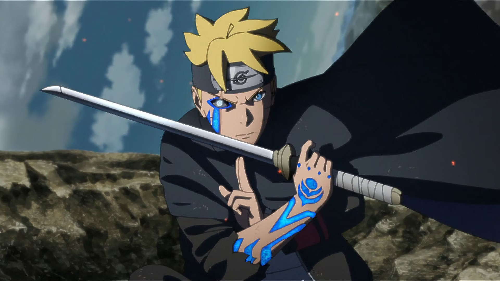

Boruto Uzumaki
Boruto Uzumaki is a shinobi from Konohagakure's Uzumaki Clan and a direct descendant of the Hyūga clan through his mother. Initially nonchalant in his duties as a member of Team 7 and resentful of his father and the office of Hokage because it left him with no time for his family; Boruto eventually comes to respect and reconcile with his father and his role as Hokage, yet vows to become like his mentor Sasuke Uchiha — a support system for the Hokage and the village.